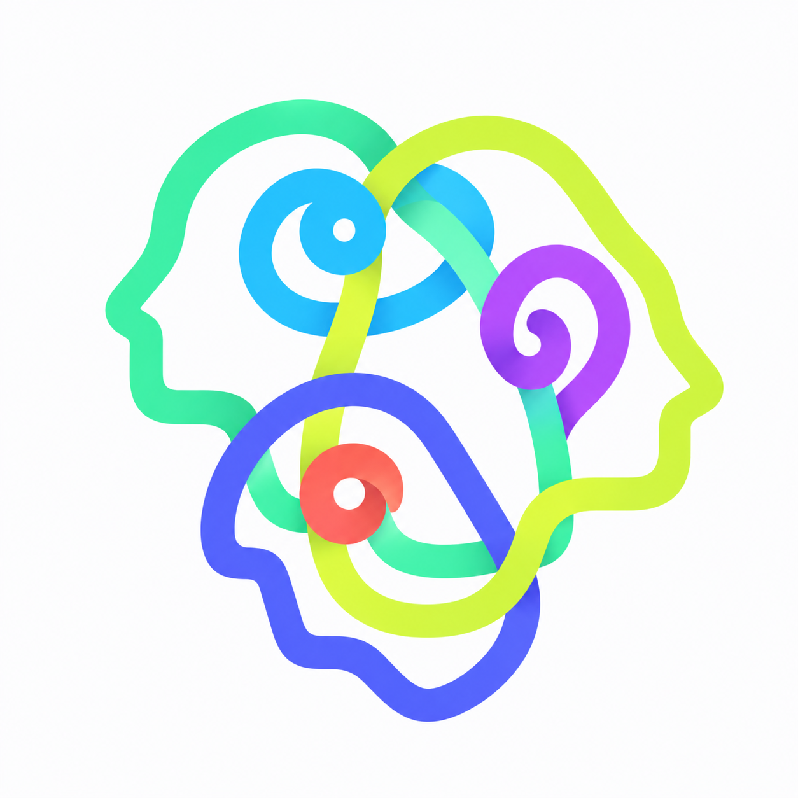

ATTENTION FIELD
A live instrument for watching collective attention move.
Every dot on screen is a real Wikipedia article being edited somewhere
right now. Wikipedia is one of the largest, most sincerely public
records of what people care about — nobody's optimizing an edit for
engagement. I wanted to watch that as a living system, not read it as
a leaderboard.
WHY IT'S BUILT THIS WAY
- No dashboard, no charts, no trending list — a physical field where distance, motion, and color are the only vocabulary
- Every visual property maps to real data: size is activity, color is topic, connections are real shared Wikipedia categories, motion is real physics — nothing here is decorative animation
- Clusters form from Wikipedia's own category taxonomy, not a guessed similarity score
- A Pattern Engine reads live edit summaries to guess why a topic is active, the way a human analyst would
- Built and verified without ever seeing it render — the physics and data layer were tested numerically against the live API, not eyeballed